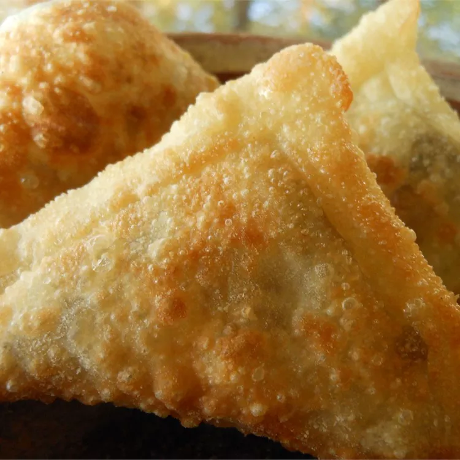

Sambusa

Description
This sambusa recipe is my version of a Somali dish that I learned by watching friends around Ramadan. These sambusas are really good, and I can't stop eating them. They are served during Ramadan, weddings, parties, or just because. Since I am married to a Somalian man, I learned to cook a few things, and there are some of my American dishes he loves as well.
Ingredients
- 2 tablespoons olive oil
- 1 small onion, finely chopped
- 1 leek, chopped
- 1 clove garlic, minced
- 2 pounds ground beef
- 2 teaspoons ground cumin
- 2 teaspoons ground cardamom
- 1 teaspoon salt
- 1 teaspoon pepper
- 1 tablespoon all-purpose flour
- 1 tablespoon water, or as needed
- 1 (14 ounce) package spring roll wrappers
- 1 quart oil for frying, or as needed
Steps
- Heat olive oil in a large skillet over medium heat. Cook and stir onion, leek, and garlic in hot oil until onion is transparent. Add ground beef; cook and stir until still slightly pink and about halfway done. Season with cumin, cardamom, salt, and pepper; mix well. Continue cooking until beef is browned and crumbly. Remove the skillet from heat.
- Mix together flour and water in a small bowl to make a thin paste. Using one wrapper at a time, fold into the shape of a cone. Fill cone with beef mixture, close the top, and seal with paste. Repeat until wrappers or filling are used up.
- Heat oil in a deep fryer or large saucepan to 365 degrees F (170 degrees C). There should be enough oil to submerge sambusas. Fry sambusas, a few at a time, in hot oil until golden brown. Remove to a paper towel-lined plate to drain.
- Go back Home
- Go back to the top